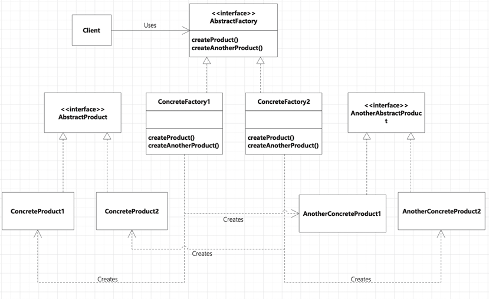

首页 > 编程笔记
Python抽象工厂模式（附带源码）
我们先来看一个例子。现在有一个比萨生意非常火爆，现在有很多人要开加盟店，不同地区的加盟店的口味有差异，这种情况使用 Python 工厂方法模式就可以解决。
但是，后来这个生意越来越红火了，A城市的比萨店生意“火爆”，需要在A城市开多家分店，B城市也面临同样的情况。为了保证质量，就得控制原料。所以我们得建造原料工厂来生产不同城市所需的原料。
抽象工厂模式提供一个接口，用于创建相关或依赖对象的“家族”，而不需要明确指定具体类，如图1所示。该模式允许用户用抽象的接口创建一组产品，而不需要知道实际产出的具体产品是什么，这样用户就从具体的产品解耦了。
在图1中， ConcreteFactory1 和 ConcreteFactory2 是通过 AbstractFactory 接口创建的。此接口具有创建多种产品的相应方法。
ConcreteFactory1和ConcreteFactory2 实现了 AbstractFactory，并创建实例 ConcreteProduct1、ConcreteProduct2、AnotherConcreteProduct1 和 AnotherConcreteProduct2。在这里，ConcreteProduct1 和 ConcreteProduct2 是通过 AbstractProduct 接口创建的，而 AnotherConcreteProduct1 和 AnotherConcreteProduct2 则是通过 AnotherAbstractProduct 接口创建的。
让我们拿一个现实世界的场景来理解抽象工厂模式的实现。比如在一个项目中有很多数据信息，包括 User 和 Department，项目可以切换不同的数据库进行数据的存取，包括 MySQL 和 Oracle，所以我们得建造不同的数据工厂，来生产不同数据信息。
请看下面的 Python 代码：
但是，后来这个生意越来越红火了，A城市的比萨店生意“火爆”，需要在A城市开多家分店，B城市也面临同样的情况。为了保证质量，就得控制原料。所以我们得建造原料工厂来生产不同城市所需的原料。
抽象工厂模式提供一个接口，用于创建相关或依赖对象的“家族”，而不需要明确指定具体类，如图1所示。该模式允许用户用抽象的接口创建一组产品，而不需要知道实际产出的具体产品是什么，这样用户就从具体的产品解耦了。

图1：抽象工厂模式
图1：抽象工厂模式
在图1中， ConcreteFactory1 和 ConcreteFactory2 是通过 AbstractFactory 接口创建的。此接口具有创建多种产品的相应方法。
ConcreteFactory1和ConcreteFactory2 实现了 AbstractFactory，并创建实例 ConcreteProduct1、ConcreteProduct2、AnotherConcreteProduct1 和 AnotherConcreteProduct2。在这里，ConcreteProduct1 和 ConcreteProduct2 是通过 AbstractProduct 接口创建的，而 AnotherConcreteProduct1 和 AnotherConcreteProduct2 则是通过 AnotherAbstractProduct 接口创建的。
让我们拿一个现实世界的场景来理解抽象工厂模式的实现。比如在一个项目中有很多数据信息，包括 User 和 Department，项目可以切换不同的数据库进行数据的存取，包括 MySQL 和 Oracle，所以我们得建造不同的数据工厂，来生产不同数据信息。
请看下面的 Python 代码：
import sys
# 抽象用户表类
class User(object):
def get_user(self):
pass
def insert_user(self):
pass
# 抽象部门表类
class Department(object):
def get_department(self):
pass
def insert_department(self):
pass
# 操作具体User数据库类——Mysql
class MysqlUser(User):
def get_user(self):
print('MysqlUser get User')
def insert_user(self):
print('MysqlUser insert User')
# 操作具体Department数据库类——Mysql
class MysqlDepartment(Department):
def get_department(self):
print('MysqlDepartment get department')
def insert_department(self):
print('MysqlDepartment insert department')
# 操作具体User数据库类——Orcal
class OrcalUser(User):
def get_user(self):
print('OrcalUser get User')
def insert_user(self):
print('OrcalUser insert User')
# 操作具体Department数据库类——Orcal
class OrcalDepartment(Department):
def get_department(self):
print('OrcalDepartment get department')
def insert_department(self):
print('OrcalDepartment insert department')
# 抽象工厂类
class AbstractFactory(object):
def create_user(self):
pass
def create_department(self):
pass
class MysqlFactory(AbstractFactory):
def create_user(self):
return MysqlUser()
def create_department(self):
return MysqlDepartment()
class OrcalFactory(AbstractFactory):
def create_user(self):
return OrcalUser()
def create_department(self):
return OrcalDepartment()
if _ _name_ _ == "_ _main_ _":
db = sys.argv[1]
myfactory = ''
if db == 'Mysql':
myfactory = MysqlFactory()
elif db == 'Orcal':
myfactory = OrcalFactory()
else:
print("不支持的数据库类型")
exit(0)
user = myfactory.create_user()
department = myfactory.create_department()
user.insert_user()
user.get_user()
department.insert_department()
department.get_department()
抽象工厂模式的适用场景
- 客户端不依赖于产品类实例如何被创建、实现等细节。
- 强调一系列相关的产品对象（属于同一产品族）一起使用来创建对象需要大量重复的代码。
- 提供一个产品类的库，所有的产品以同样的接口或者大部分相同的接口出现，从而使客户端不依赖具体实现。
抽象工厂模式的优点
抽象工厂模式除了具有工厂方法模式的优点外，其主要的优点就是可以在类的内部对产品族进行约束。所谓的产品族，一般其产品或多或少都存在一定的关联，抽象工厂模式可以在类内部对产品的关联关系进行定义和描述，这样就不必专门引入一个新的类来进行管理。
抽象工厂模式的缺点
因为规定了所有可能被创建的产品集合，所以产品族扩展新的产品时较困难，需要修改抽象工厂的接口，这增加了系统的抽象性和理解难度。关注公众号「站长严长生」，在手机上阅读所有教程，随时随地都能学习。内含一款搜索神器，免费下载全网书籍和视频。

微信扫码关注公众号